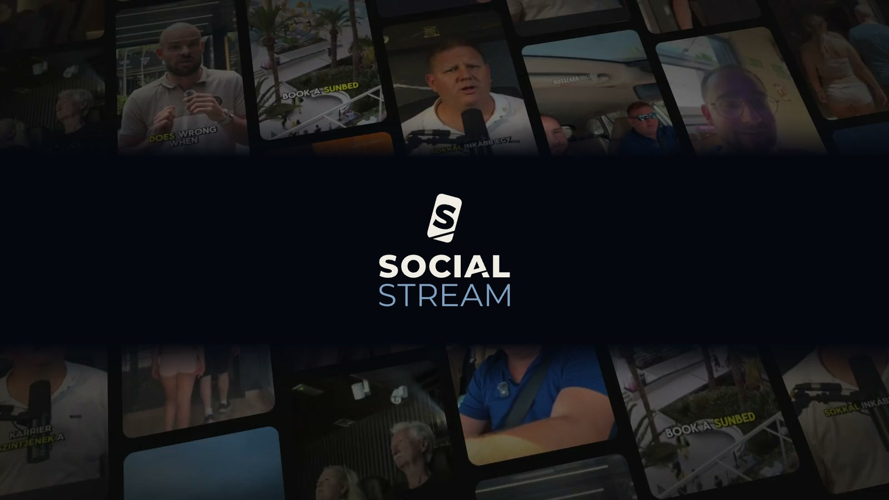
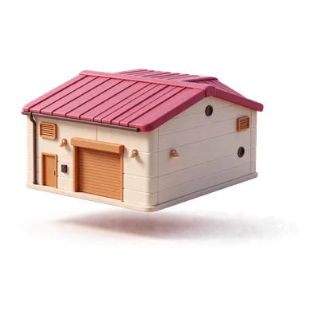
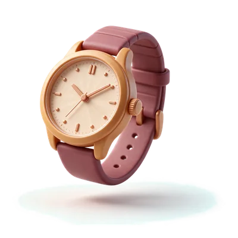

Ajtó webshop · Google Performance Max
81× ROAS
1 forint hirdetésből 81 forint bevétel.

Ingyenes audit
Videók, amiket végignéznek. Hirdetések, amik megtérülnek.Videos people watch to the end. Ads that pay off.
Kérem az ingyenes auditot(01) Interest media ügynökség
Igen, a nevünkben még ott a social. A stream maradt. Ami benne folyik, az változott.Yes, our name still says social. The stream stayed. What flows in it changed.
Mi gyártjuk a videót, mi futtatjuk a hirdetést, és mi mérjük, mit hozott. A SocialStream egy kézben tartja a kreatívot, a kampányt és a landing oldalt, hogy minden forint a bevételt szolgálja.We make the video, we run the ads, and we measure what they bring in. SocialStream keeps the creative, the campaign and the landing page in one pair of hands, so every forint works toward revenue.
(02) Ismerős?
A legtöbb vállalkozás ugyanabba a falba ütközik. A videót egy ember készíti, a hirdetést egy másik futtatja, az oldalt egy harmadik rakta össze évekkel ezelőtt. Mindenki jól csinálja a saját részét, de senki nem felel azért, hogy a végén legyen vásárlás.
A videóid mellett mindenki továbbgörget.
Ebben segítünkVideó tartalomgyártás
Posztolsz, amikor jut rá idő, de alig reagál valaki.
Ebben segítünkSocial média jelenlét
A hirdetés hónapról hónapra drágul, és nem tudod, mit hoz vissza.
Ebben segítünkFizetett hirdetésKattintanak, aztán vásárlás nélkül eltűnnek az oldaladról.
Ebben segítünkWeboldal és landingAz érdeklődők kihűlnek, mert senki nem keresi őket időben.
Ebben segítünkAutomatizáció és e-mailNem tudod, melyik videó hozta a vásárlást, és hogy merre tovább.
Ebben segítünkNövekedési stratégia
Nem a platformmal van a baj, hanem azzal, hogy senki nem látja egyben.The platform isn't the problem. Nobody sees the whole picture.
Mi egyben látjuk, a videótól a kattintáson át a vásárlásig.
(03) Szolgáltatások
Videók, amik megállítják a görgetést.
Hookok, kreatív irány és gyártás: a kampány motorja a kreatív, ezért azt is mi készítjük.
Jelenlét, ami több, mint posztolás.
Feed, Stories, Reels és TikTok egy stratégiával és egy hanggal: tartalomnaptár, közösségkezelés, szövegírás.
Hirdetés, ami bevételt hoz, nem csak megjelenést.
Meta, TikTok és Google kampányok napi optimalizálással, A/B teszteléssel, skálázással.
Oldal, ami befejezi, amit a videó elkezdett.
Gyors, mobilra tervezett landingek és weboldalak, amik konvertálnak.
Követés, ami senkit nem felejt el.
Lead-követés, e-mail szekvenciák, automatizált tölcsérek: egyszer beállítjuk, utána dolgozik helyetted.
Stratégia, ami összeköti a többit.
Kampánystratégia, funnel audit és piaci pozicionálás, partnerként.
(04) Valódi ügyfelek · valódi számok
Ajtó webshop · Google Performance Max
81× ROAS
1 forint hirdetésből 81 forint bevétel.
Csarnoképítő ügyfél · Meta
79M Ft
Bevétel egy hét alatt, egy B2B kampányból.

Karóra webshop · Karácsony
23× ROAS
Ünnepi kampány, több mint 8M Ft bevétellel.

Egészségügyi webinár
105Ft
Ennyibe került egy jelentkező: körülbelül 5700 jelentkező 600K Ft-ból.
(05) Kiknek dolgozunk
Akkor vagyunk jó választás, ha a vállalkozásod stabil bevételt termel, hosszú távon gondolkodsz, és befektetésnek látod a marketinget.
Vásárlások Google és Meta kampányokból. A legjobb e-commerce eredményünk: 81× ROAS egy ajtó webshopnál.Sales from Google and Meta campaigns. Our best e-commerce result: 81× ROAS for a door webshop.
Ajánlatkérések ott is, ahol „a Facebook nem működik”. Egy csarnoképítő ügyfélnek 79M Ft bevétel egy hét alatt.Quote requests even where “Facebook doesn’t work”. 79M Ft of revenue in one week for an industrial hall builder.

Jelentkezők alacsony költséggel: egy egészségügyi webinárnál 105 Ft volt egy jelentkező.Sign-ups at a low cost: 105 Ft per registrant for a healthcare webinar.

Szépségszalontól a tenerifei élményprogramig: videó, social és hirdetés egy csapattól.From beauty salons to experiences on Tenerife: video, social and ads from one team.
Nem neked való, ha egy éjszaka alatti sikert vagy olcsó félmegoldást keresel.
(06) Így dolgozunk
Ingyenes, 30 perces átvilágítás. Megnézzük a kampányaidat, a landing oldaladat és az ajánlatodat, és őszintén megmondjuk, hol folyik el a pénz.
Kampánystratégia, funnel és pozicionálás: kinek, mit és melyik platformon mutatunk.
Hookok, kreatív irány, forgatás és vágás. A videót mi készítjük, a koncepciótól a kész anyagig.
Meta, TikTok és Google kampányok napi optimalizálással és A/B teszteléssel. Ami működik, azt skálázzuk.
(07) Ügyfeleink szavaival
„Már az induláskor is volt vásárlás – olyan számokat produkált, amit eddig nem is láttunk.”
„Azt hittük, a Facebook a fiataloknak és a webshopoknak való – mi csarnokot építünk. Aztán egy hét alatt annyi ajánlatkérésünk lett, mint korábban fél év alatt összesen.”
„Minden decemberben rettegtünk a hirdetési áraktól. Idén először éreztük úgy, hogy az ünnepi szezon nekünk dolgozik – nem ellenünk.”
„Pár száz jelentkezőre számítottunk a webinárra. Amikor a számláló majdnem 5700-nál állt meg, alig hittük el, hogy ez ugyanabból a büdzséből jött ki.”
„Profi csapatot szerettem volna az indulás után. Mind Facebook/Instagram, mind weboldal és hirdetés területén profi kampányokat készítenek. Rövid időn belül jöttek az eredmények – nekem semmi dolgom nem volt velük.”
„A Social Stream profi módon készítette el a weboldalam. Mindenkinek tetszett az igényes és könnyen áttekinthető tartalom! Csak ajánlani tudom őket.”
(08) A csapat
Meta Marketing Pro-ként látta, hogyan gondolkodnak a legkomolyabb márkák. 2022-ben alapította a SocialStreamet.
 DavidKreatív és tartalomgyártás
DavidKreatív és tartalomgyártásHookok, forgatás, kreatív irány.
 LidiProdukció és szerkesztés
LidiProdukció és szerkesztésVágás, ritmus, precizitás, határidőre.
Az ajánlat
Havonta legfeljebb két új partnert vállalunk.
(09) Kérdések
Semmibe. Ingyenes, és nem jár kötelezettséggel.
30 percig.
Válaszolunk az e-mailedre, és egyeztetünk egy időpontot a 30 perces auditra.
Átnézzük a kampányaidat, a landing oldaladat és az ajánlatodat, és őszintén megmondjuk, mit csinálnánk másképp, még mielőtt bármit fizetnél.
Stabil bevételű márkákkal, amelyek hosszú távon gondolkodnak, és befektetésnek látják a marketinget. Havonta legfeljebb két új partnert vállalunk.
Igen. A hookoktól és a kreatív iránytól a forgatáson át a vágásig mi gyártjuk, nem csak hirdetjük.
A Meta felületein (Facebook, Instagram), a TikTokon és a Google-ön.
Tenerifén és Budapesten.
Havonta legfeljebb két új partner.